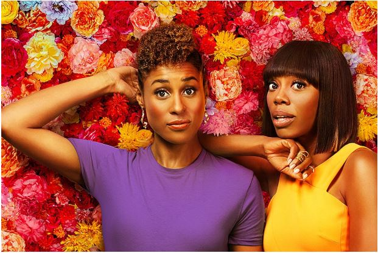
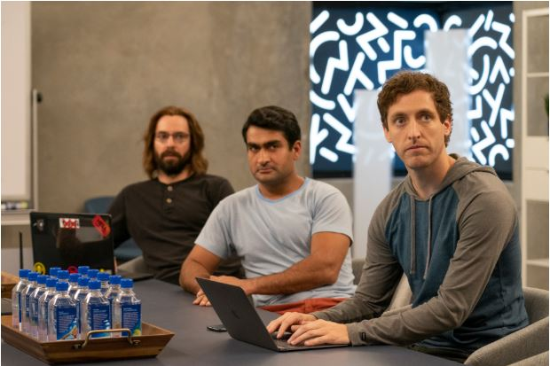

Представляем вашему вниманию подборку комедийных сериалов.
Топ 5 лучших:

Режиссёр: Сесиль Эмеке, Кевин Брэй, Мелина Матсукас
В ролях: Сухата Рэй, Мэйсон МакКалли, Ивонн Орджи, Иса Рэй
Современный «Секс в большом городе». Остроумный, нежный и мудрый.

Режиссёр: Майк Джадж
В ролях: Шайну Бала, Бобак Бахтиари, Виктор Ачкеев, Порша Коулмэн, Аманда Крю
Плюсы, минусы и подводные камни стартаперского мира, поданные с огромной дозой иронии.